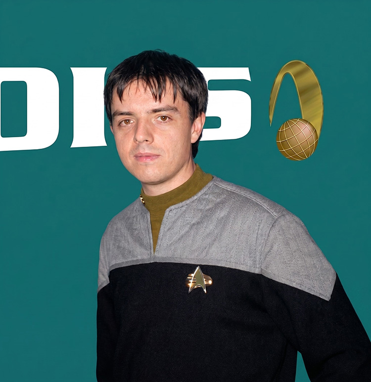

FOTONote
Peter Jacket è una persona gentile con tutti, che non perde facilmente la pazienza, un po' introverso e con una buona dose di sfortuna addosso.
Ha anche una buona dose di intuito, oltre ad avere un po' di buon senso e ad essere un po' troppo "con i piedi per terra".
È un appassionato dei romanzi di Hercule Poirot, e in diverse occasioni ne ha utilizzata una ricostruzione olografica per cercare di risolvere un compito a lui assegnato (in altre parole per rispondere ad una prova pratica in bianco, ma con eleganza!).
Se la cava molto bene con i computer ed è un grande appassionato di hologames.
Il suo sogno è quello di Comandare la USS Enterprise, appena il buon vecchio Jean-Luc avrà distrutto anche questa e sarà stato spedito a cercare manufatti alieni ai confini della galassia.
Abilità
- Esperto di sistemi informatici.
Incarichi
- Capo Operazioni - USS Afrodite NCC-1863